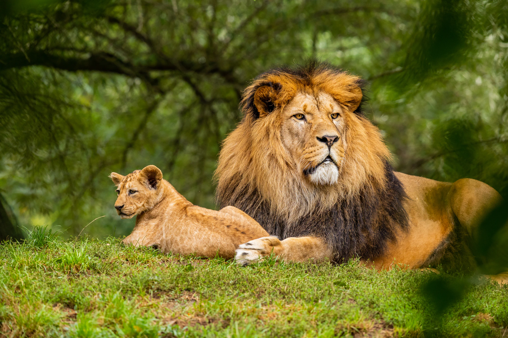
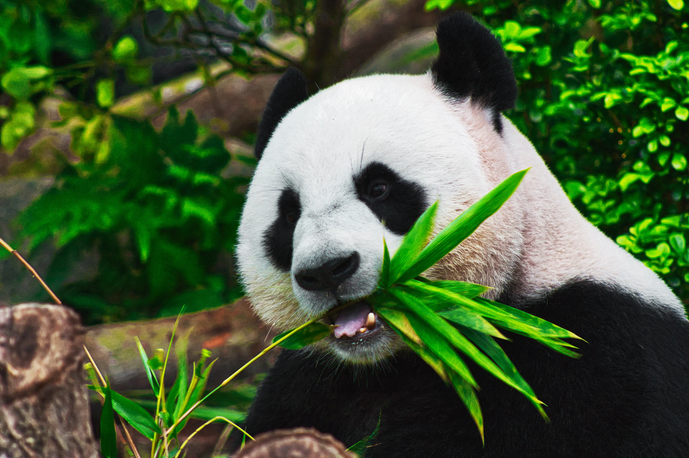
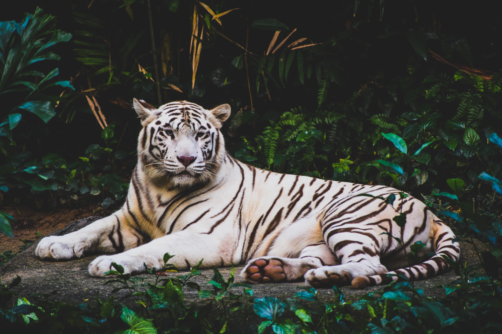

Welcome to the Zoo!
We have Lions, Owls, Pandas, and Tigers.
Animals Our Zoo has four distinct, exotic animals.
-
 Lions
The world's most social felines, lions roam the savannas and grasslands of the African continent, hunting cooperatively and raising cubs in prides.
Learn More -

Owls
Owls are birds from the order Strigiformes, which includes over 200 species of mostly solitary and nocturnal birds of prey.
Learn More -
 Pandas
The giant panda, is a bear species endemic to China. It is characterised by its bold black-and-white coat and rotund body.
Learn More -
 Tigers
The tiger is the largest living cat species. It is most recognisable for its dark vertical stripes on orange fur with a white underside.
Learn More